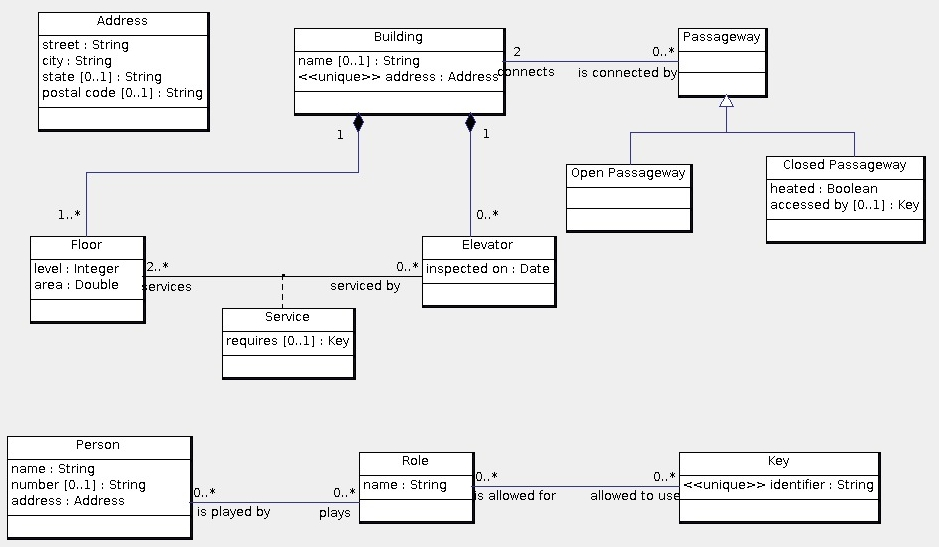

An address consists of a street (including the number), a city, an optional state or province, and an optional postal code. A building has a unique address, and may have a name. A building can be connected to another building with a passageway. A passageway always connects exactly two buildings. A passageway may be open or enclosed. An enclosed passageway may be heated and may require a key. A building is composed of one or more floors. Each floor has a level and area. The level of a floor is an integer. The base or street level is 1. Levels can be positive or negative. An elevator has a set of floors that it services. Note that an elevator is an integral part of a building. An elevator has a date when it was most recently inspected. To access one of the floors that an elevator services, it may be necessary to have a key. For example, an elevator could service floors 1, 5, 6 and 7, and the elevator can only open on floor 7 with a key. A key has an identifier, and may be used by one or more roles. A role has a name and a set of persons who have the role. For example, the persons named "Zhang Wei" and "Aadhya" have the role named "admin". A person has a name and address. A person may have an apartment number.
